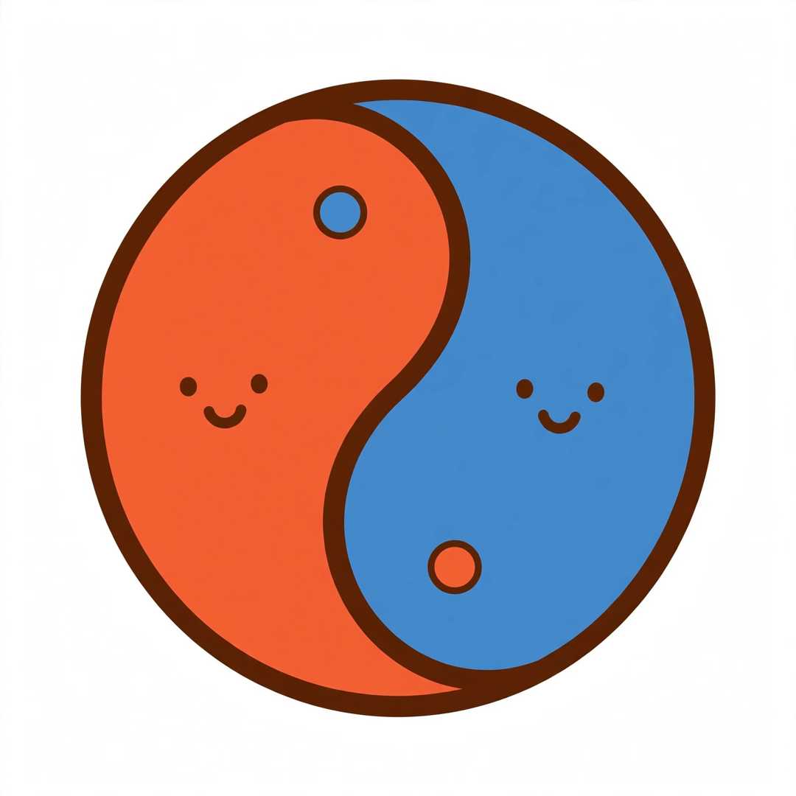
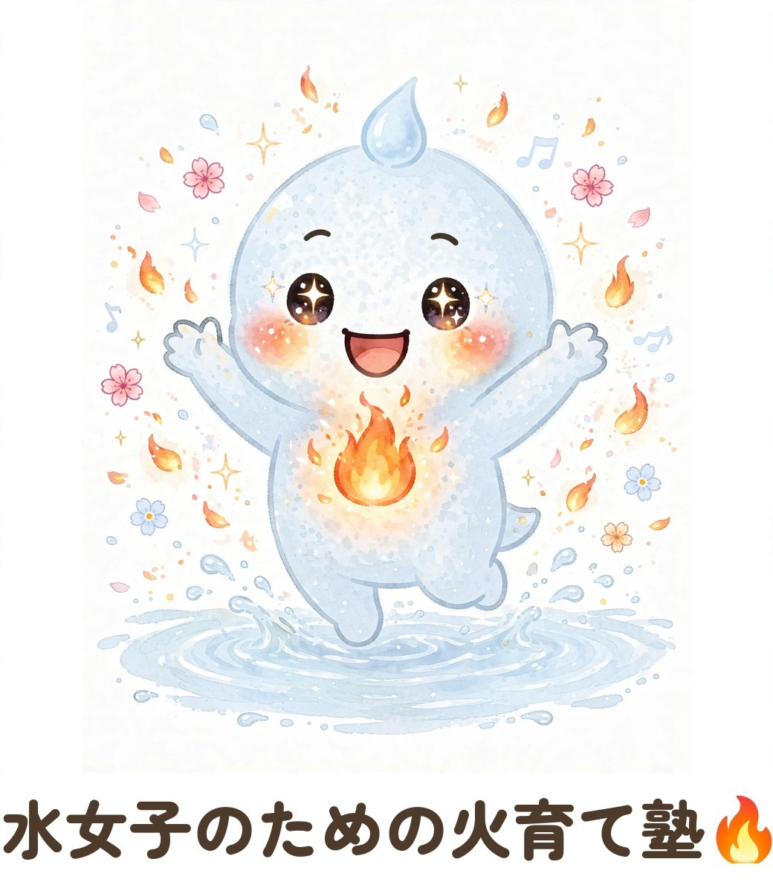

感じているのに、
言葉にできない。
水女子のための火育て塾🔥
たくさん感じているのに、言葉にならなくて、
モヤモヤが心と体に溜まっていく——。
ここは、あなたの気持ちを言葉にして、
外に出せるようになるための学びの塾です。
無料相談の質問募集をはじめました。有料グループは開設準備中です。

この塾で、できるようになること
モヤモヤを、言葉に変えていく場所
① モヤモヤを言語化して、分解する
「私の気持ち、一体なんなの。このイライラは。この不安は」——そのモヤモヤを言葉にしていくと、正体がはっきりしてきます。分からないまま抱えるのが、一番しんどいんです。
② 自分で自分の気持ちを、理解できる
言葉になった気持ちは、分解して、整理整頓できます。そうすると、自分のピース（パーツ）を、自分で取り扱えるようになります。心にも、体にも、頭にも、モヤモヤが溜まらなくなります。
③ 「これだよ」と、相手に伝えられる
自分の気持ちを自分で理解できると、旦那さんにも、周りの人にも、「これだよ」と言葉で伝えられるようになります。「察してほしい」と待つだけじゃなくなるんです。その積み重ねが、その人の中の火を育てます。
水男子や、学びたい火男子・火女子も参加OKです。
大事なのは、正解の言葉を当てることじゃなくて、
「あなたの言葉」が見つかることです。
塾の進み方
質問・相談を送ると、たけちゃんが選んで答えます。
そのやりとりを、みんなで共有して学ぶ塾です
① 感じていることを、そのまま質問・相談で送る
まとまっていなくて大丈夫です。断片でも、体の感じでも、「なんかモヤモヤする」でも。そのまま送ってもらうところから始まります。一人で「うまく言わなきゃ」と、頑張らなくて大丈夫です。
② たけちゃんが選んで、言葉の候補を当てながら答える
「これは？」「あれは？」「こういう言葉は？」——寄せられた質問・相談に、たけちゃんがいろいろな言葉を当てながら答えていきます。考えるのは、あなた一人じゃありません。
③ 「あ、それそれ」が、見つかる
候補の中から、自分にぴったりの言葉にたどり着けたとき、モヤモヤがすっとほどけます。そして、その答えはグループのみんなで共有します。自分が質問しなくても、他の人の質問と答えを読む中で、「あ、それ私も」と自分の言葉が見つかることが、よくあるんです。
妻の体験談
水が強い妻が、言葉にできるようになるまで
「私は、水が強くて、たくさん感じているのに、言葉にするのが全然できなかったんです。たけちゃんとたくさん会話することで、感じていたけど言葉にできなかったものが、どんどん言葉として出てくるようになりました。体にたまらなくなった感じがあって、今は感じているものをたくさん話すことが、すごく楽しくなっています。とても力強くサポートしてもらって、本当に良かったと思っています。言語化の喜びを感じられる女性が増えたらいいなと思っています。」
―― たけちゃんの妻（水の性質が強い）
いただいた感想
言葉にできるようになった、変化の声
「実家でトラブルになりたくなくて、イヤな気持ちを隠してニコニコしてた。
子どもの頃から『何考えてるのかわからない子で困った』と母に言われるたびに、『私が本音を出すと、あなたがヒステリックにわめくからでしょ』と思って腹を立てていましたが。
何考えてるのか、わからないなら、わかるように表現します！！
実家でキレ散らかします❣️
たけしさん、本当にありがとうございます🙇♀️」
「ありがとうございます。今日、納得いかないなって思う事が起こったのですが、気持ちを言葉にして伝える事が出来ました。今までの私は上手く言葉に出来なくて、我慢すれば良い、伝わって欲しいなど、モヤモヤしていました。今日、自分の変化が分かりました」
「いつも自分の気持ちを伝えるとなると、泣いてしまう事がほとんどでした。後から本当の思いが出てきて、また言えなかったと悔しくなったり。でも今日はしっかり落ち着いて、言葉が出て来て、話が出来たんです。自分でも私の思いがはっきり分かりました。嬉しいです！！本当にありがとうございます」
「買い物に行って、個人の飲食店でテイクアウトをしました。店員さんが気さくに話しかけて下さり会話になったのですが、今までの私は言葉を選びすぎるせいか、一生懸命話すような感じでした。今日はスラスラ言葉が出て来て、変化を感じました。本当に生活の一コマという感じですが、生きやすい様な感覚になります。心が穏やかに過ごせています」
「家族に対して、手伝って欲しいこと、嫌なことは伝えてみています」
「たけちゃん、こんにちは。だんだん、意識するだけで心に火が灯る感覚になってきました。伝えたいことは伝えて、家族も変わってきています」
参加のご案内
「私も、言葉にできるようになりたい」
そう思ってくださった方へ
無料相談・質問募集
質問・相談は、Googleフォームから送れます。寄せられた中から、週3〜5個くらいを目安に、たけちゃんが選んで、Threads・noteなどで公開でお答えします（匿名で、個人が分かる情報は出しません）。自分の質問が選ばれなくても、他の人の質問と答えを読むことで、自分の気持ちを言葉にするヒントが見つかります。
※ 送るときは、本名や連絡先など、個人が分かる情報は入れないでください。
質問・相談を送るnoteメンバーシップ
noteのメンバーシップ（有料）です。週10〜15個くらいの質問・相談への回答に加えて、「火パワーアップ」の学習もできます。もっとたくさん質問したい、しっかり学びたい方向けのグループです。
ただいま開設準備中です
申し込む（準備中）有料グループの開設が決まったら、このページとInstagram・noteでご案内します。
たけちゃんについて
心体調整塾 たけちゃん
僕は「火」が強い人間です。言葉で考えて、言葉で整理するのが得意な分、感じることは苦手でした。妻はその真逆で、たくさん感じているのに言葉にできない、「水」の強い人です。結婚15年の会話の中で、妻が自分の気持ちを言語化して、外に出して表現するのを、たくさん手伝ってきました。
火の力——言葉にする力で、水の気持ちを言葉に変えるお手伝いをする。それが、火男子の僕だからこそできることだと思っています。
食品工場 製造技術者
心と体の整体師研究
土木設備 ダム河川 技術者
夫婦15年研究
心体調整塾 たけちゃん